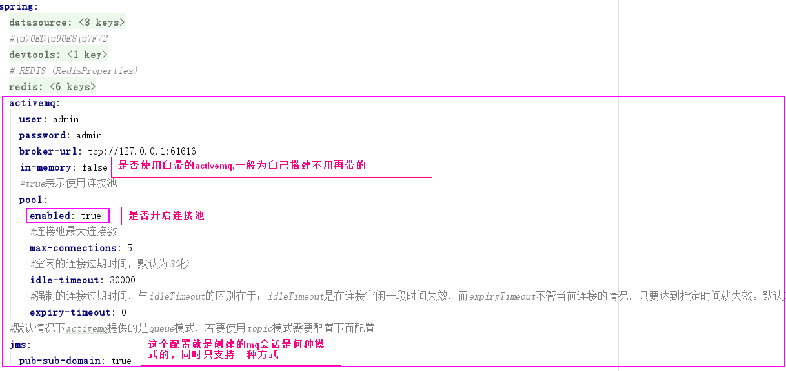

在之前的学习中，我们了解了MQ（消息机制）在项目中的重要作用，以及如何简单的搭建一个单机版的ActiveMQ，接下啦我们学习如何利用springboot集成使用ActiveMQ，如何利用习惯配置集成（只能支持pub或sup）、利用自定义配置（同时支持pub和sup）
1.pom文件
1
2
3
4
5
6
7
8
9
10
11
12
13
14
15
16
| <dependency>
<groupId>org.springframework.boot</groupId>
<artifactId>spring-boot-starter-activemq</artifactId>
</dependency>
<dependency>
<groupId>org.apache.activemq</groupId>
<artifactId>activemq-pool</artifactId>
</dependency>
<!--如果需要使用activemq的连接池配置、则必须引入该包-->
<dependency>
<groupId>org.messaginghub</groupId>
<artifactId>pooled-jms</artifactId>
<version>1.0.3</version>
</dependency>
|
2. 集成
2.1习惯配置方式集成
### 2.1.1application.yml配置

2.1.2消息发送
### 2.1.3监听方式消息接收
### 2.1.4测试
2.2自定义配置方式集成
application.yml配置无需配置（或者将mq的配置提到配置文件中）
2.2.1自定义mqBean（池方式）
2.2.2消息发送

2.2.3监听方式消息接收
### 2.2.4测试